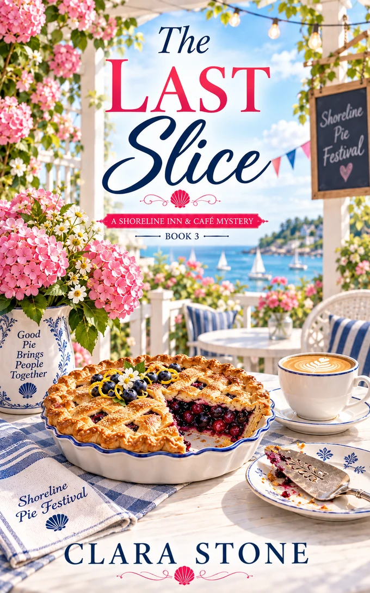
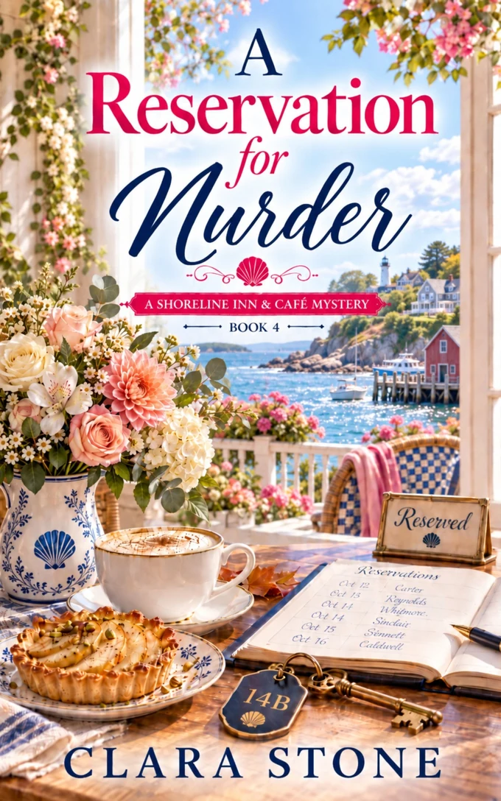
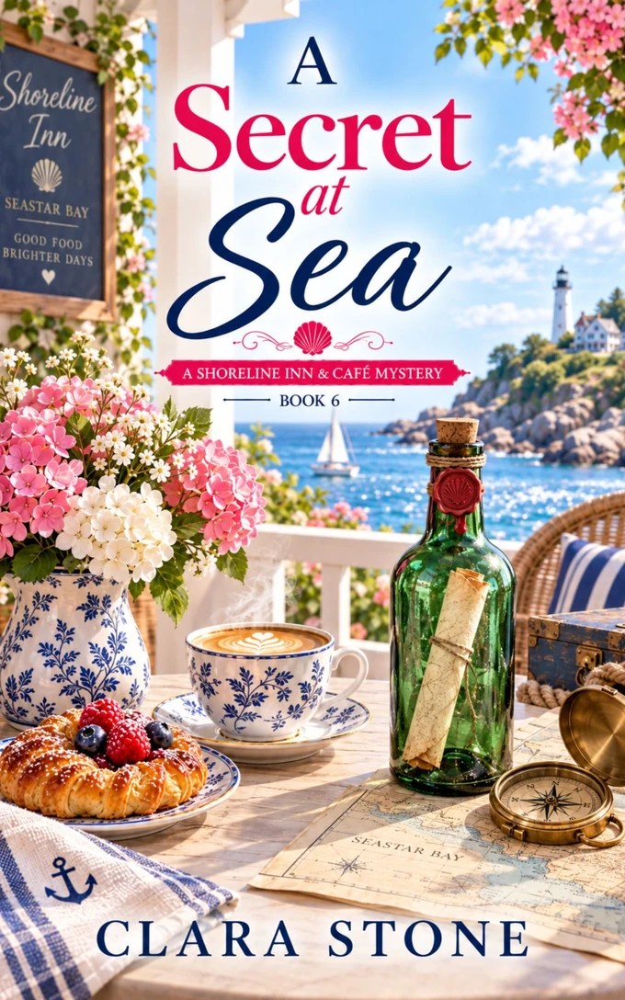
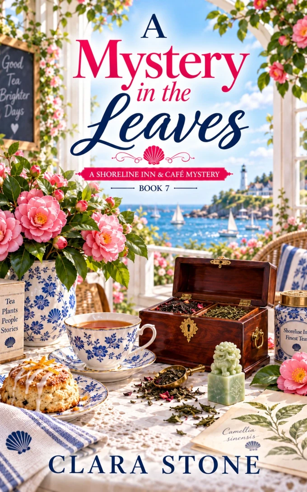
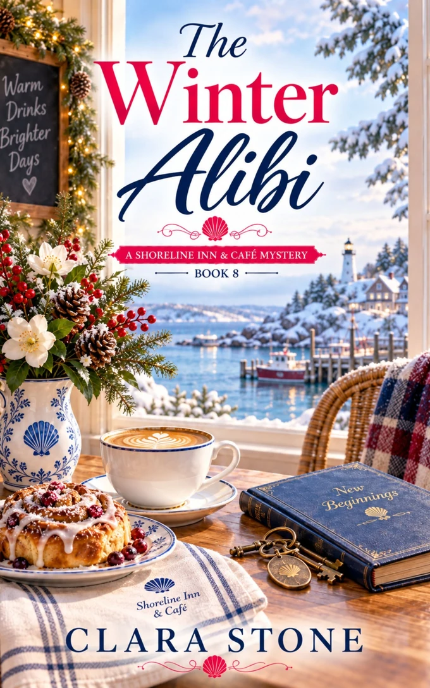
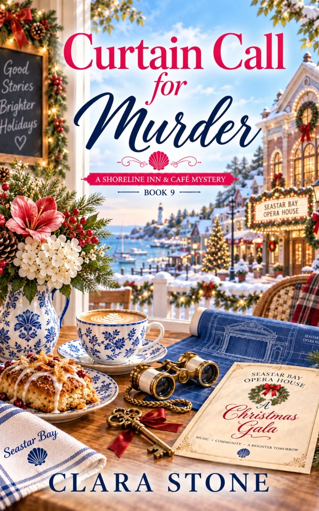
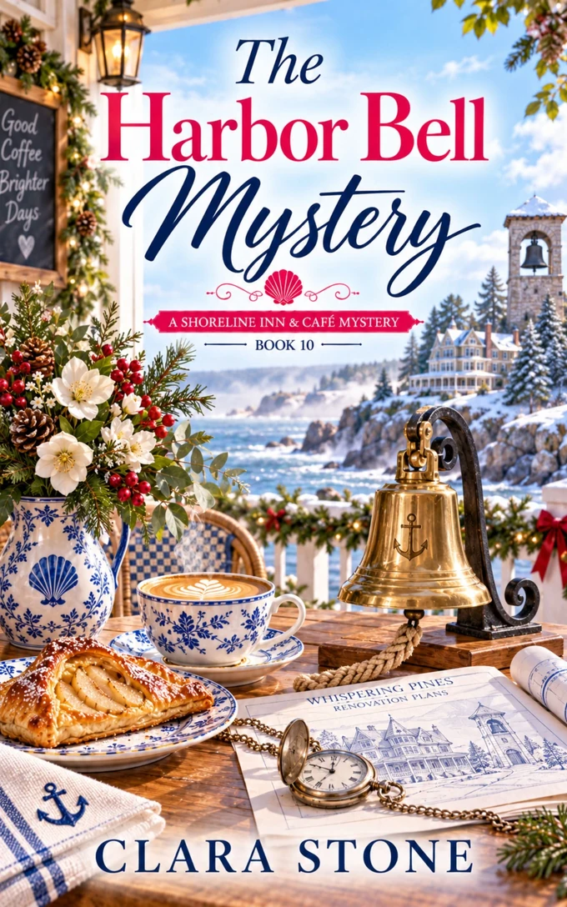
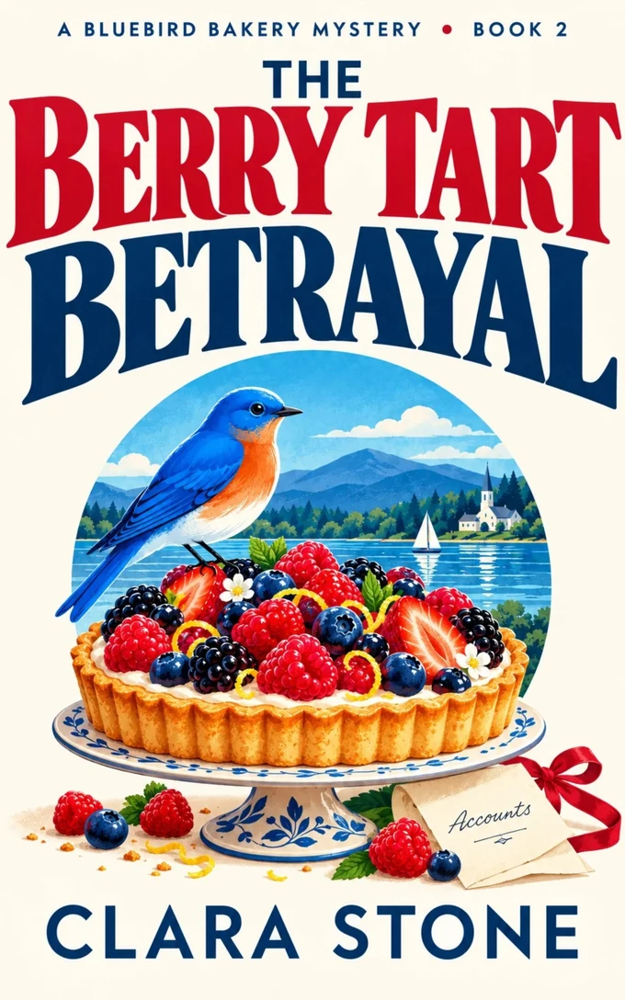
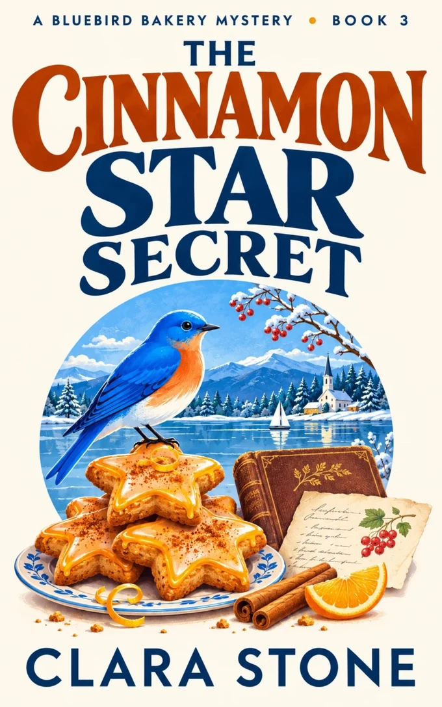

BOOK 01 · SHORELINE INN
A Five Star Murder
Where the welcome is warm, the sea air is crisp, and the first mystery is already waiting.
Explore the bookEvery published Clara Stone cozy mystery, arranged in reading order. Choose your favorite setting and settle in.
Welcome to Seastar Bay, where the Shoreline Inn offers sea views, fresh pastries and the kind of familiar faces that make a town feel like home. In Clara Stone’s coastal series, comfort and curiosity are never far apart.
Where the welcome is warm, the sea air is crisp, and the first mystery is already waiting.
Explore the bookAnother visit to Seastar Bay, where the smallest details can change everything.
Explore the book
A cozy coastal escape with another secret beneath the surface.
Explore the book
At the Shoreline Inn, even an ordinary reservation can promise an extraordinary puzzle.
Explore the bookReturn to a town where everyone has a story—and every clue matters.
Explore the book
A seaside mystery for readers who love salt air and well-hidden secrets.
Explore the book
Autumn reaches Seastar Bay, bringing a new puzzle along with the changing leaves.
Explore the book
Winter settles over the coast, but the questions have not gone quiet.
Explore the book
Another clever case awaits among the familiar comforts of Seastar Bay.
Explore the book
A familiar harbor, a fresh mystery, and one more reason to stay a little longer.
Explore the bookCome in from the Vermont chill and take a seat at the Bluebird Bakery. Ellie Hastings’s world is filled with inviting treats, a close-knit community and the questions that hide in plain sight.

Step inside Silverlake’s Bluebird Bakery, where comforting bakes and curious secrets share the counter.
Explore the book
Sweet treats and unexpected questions await in Silverlake, Vermont.
Explore the book
Pull up a chair at the Bluebird for another freshly baked mystery.
Explore the bookJoin the Reader Club and discover three exclusive mysteries plus two companion gifts.
Explore the free library →